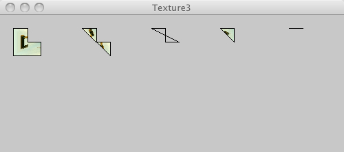

This page tests PJS textures

/* @pjs preload="berlin-1.jpg" */
import processing.opengl.*;
size(500, 200, P3D);
background(200);
PImage img = loadImage("berlin-1.jpg");
textureMode(NORMALIZED);
beginShape();
texture(img);
vertex(20, 20, 0, 0, 0);
vertex(40, 20, 0, 0, 1);
vertex(40, 40, 0, 1, 1);
vertex(60, 40, 0, 1, 0);
vertex(60, 60, 0, 0, 1);
vertex(20, 60, 0, 0, 0);
endShape(CLOSE);
beginShape();
texture(img);
vertex(120, 20, 0, 0, 1);
vertex(140, 20, 0, 1, 0);
vertex(140, 40, 0, 1, 1);
vertex(160, 40, 0, 0, 1);
vertex(160, 60, 0, 0, 0);
endShape(CLOSE);
beginShape();
texture(img);
vertex(220, 20, 0, 1, 1);
vertex(240, 20, 0, 1, 0);
vertex(240, 40, 0, 0, 1);
vertex(260, 40, 0, 1, 0);
endShape(CLOSE);
beginShape();
texture(img);
vertex(320, 20, 0, 1, 1);
vertex(340, 20, 0, 1, 0);
vertex(340, 40, 0, 0, 0);
endShape(CLOSE);
beginShape();
texture(img);
vertex(420, 20, 0, 0, 0);
vertex(440, 20, 0, 1, 1);
endShape(CLOSE);